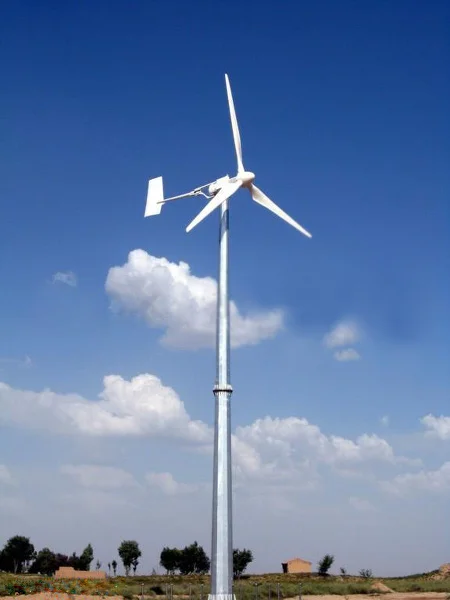
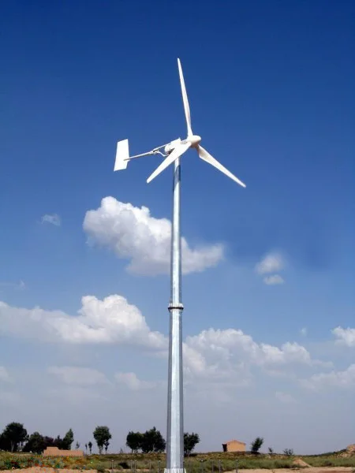
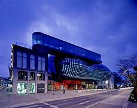
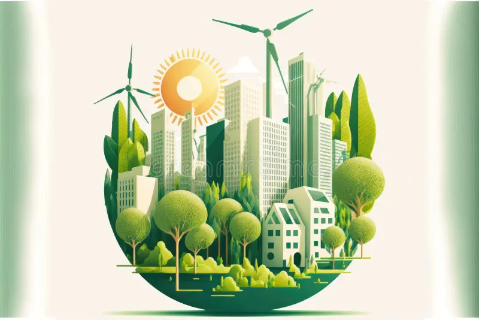

How Wind Powers Sustainable Cities
Posted on May 28, 2025
Wind is not just a force of nature—it's the future of sustainable living. At Vayuh, we harness wind energy to power smart, self-sustaining buildings that breathe life into modern cities.
Posted on May 28, 2025
Wind is not just a force of nature—it's the future of sustainable living. At Vayuh, we harness wind energy to power smart, self-sustaining buildings that breathe life into modern cities.
Posted on May 25, 2025
Modern architecture is being redefined by nature. From green rooftops to wind-powered designs, Vayuh is leading the charge in merging eco-awareness with high-tech innovation.
Posted on May 20, 2025
We envision a world where cities grow in harmony with nature. Our mission is to make sustainability not only possible, but beautiful and practical for every human on Earth.
